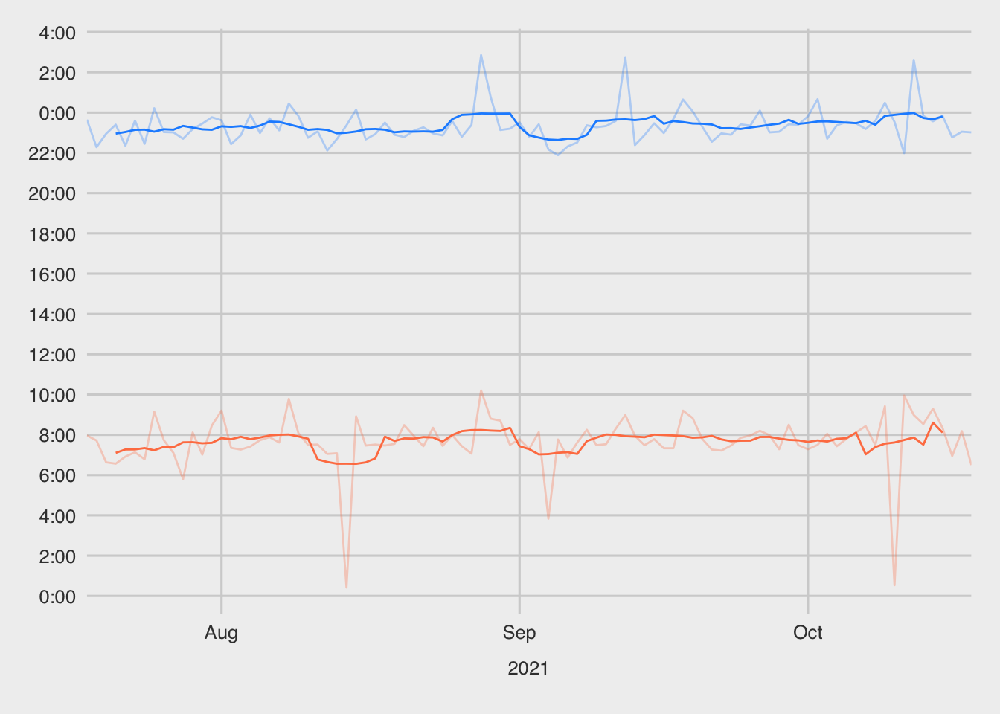
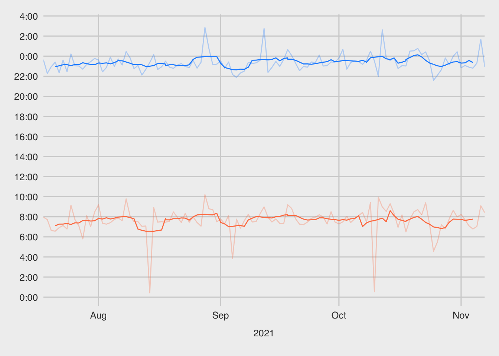
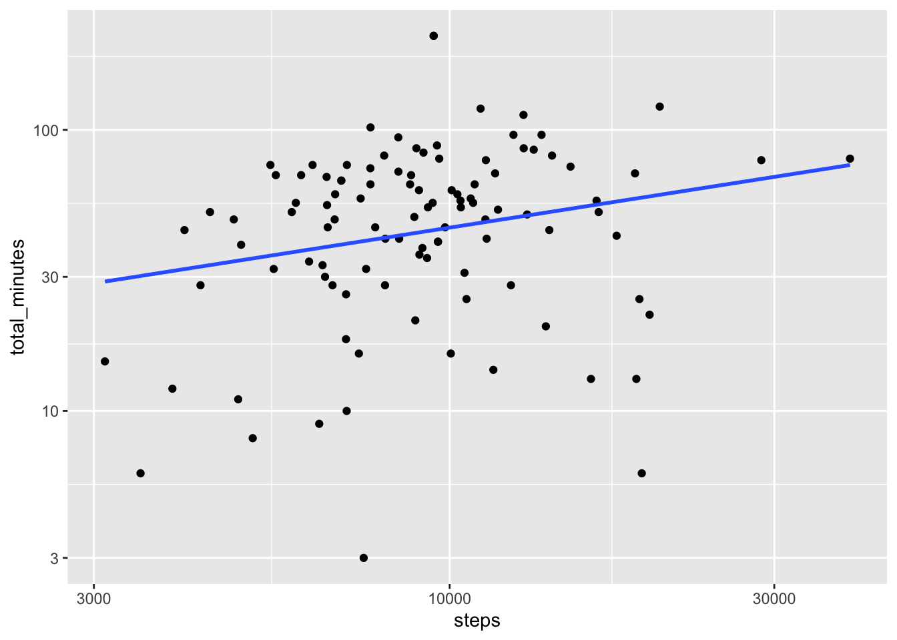

library(fitbitr)
library(lubridate)
library(tidyverse)
## Dates to use throughout post
start <- as_date("2020-01-01")
end <- as_date("2021-10-18")
generate_fitbitr_token()Working With Your Fitbit Data in R
R
data science
Note: This post was updated as of 3/25/2023 for fitbitr v0.3.0
Introduction
fitbitr 0.1.0 is now available on CRAN! You can install it with
install.packages("fitbitr")or you can get the latest dev version with
## install.packages("devtools")
devtools::install_github("mrkaye97/fitbitr")fitbitr makes it easy to pull your Fitbit data into R and use it for whatever interests you: personal projects, visualization, medical purposes, etc.
This post shows how you might use fitbitr to pull and visualize some of your data.
Sleep
First, you should either generate a new token with generate_token() or load a cached token with load_cached_token().
And then you can start pulling your data!
sleep <- get_sleep_summary(
start_date = end - months(3),
end_date = end
)
head(sleep)| log_id | date | start_time | end_time | duration | efficiency | minutes_to_fall_asleep | minutes_asleep | minutes_awake | minutes_after_wakeup | time_in_bed |
|---|---|---|---|---|---|---|---|---|---|---|
| 34207402675 | 2021-10-18 | 2021-10-17 23:01:00 | 2021-10-18 06:30:00 | 26940000 | 91 | 0 | 391 | 58 | 0 | 449 |
| 34193579435 | 2021-10-17 | 2021-10-16 23:03:30 | 2021-10-17 08:11:00 | 32820000 | 95 | 0 | 472 | 75 | 4 | 547 |
| 34183584553 | 2021-10-16 | 2021-10-15 22:46:30 | 2021-10-16 06:57:30 | 29460000 | 94 | 0 | 424 | 67 | 0 | 491 |
| 34174304493 | 2021-10-15 | 2021-10-14 23:50:00 | 2021-10-15 08:20:30 | 30600000 | 94 | 0 | 438 | 72 | 0 | 510 |
| 34159751655 | 2021-10-14 | 2021-10-13 23:34:00 | 2021-10-14 09:18:00 | 35040000 | 98 | 0 | 524 | 60 | 0 | 584 |
| 34146865838 | 2021-10-13 | 2021-10-12 23:50:00 | 2021-10-13 08:32:30 | 31320000 | 94 | 0 | 461 | 61 | 1 | 522 |
Once you’ve loaded some data, you can visualize it!
library(zoo)
library(scales)
library(ggthemes)
sleep <- sleep %>%
mutate(
date = as_date(date),
start_time = as_datetime(start_time),
end_time = as_datetime(end_time),
sh = ifelse(hour(start_time) < 8, hour(start_time) + 24, hour(start_time)), #create numeric times
sm = minute(start_time),
st = sh + sm/60,
eh = hour(end_time),
em = minute(end_time),
et = eh + em/60,
mst = rollmean(st, 7, fill = NA), #create moving averages
met = rollmean(et, 7, fill = NA),
year = year(start_time)
)
sleep %>%
ggplot(aes(x = date)) +
geom_line(aes(y = et), color = 'coral', alpha = .3, na.rm = T) +
geom_line(aes(y = st), color = 'dodgerblue', alpha = .3, na.rm = T) +
geom_line(aes(y = met), color = 'coral', na.rm = T) +
geom_line(aes(y = mst), color = 'dodgerblue', na.rm = T) +
scale_y_continuous(
breaks = seq(0, 30, 2),
labels = trans_format(
function(x) ifelse(x > 23, x - 24, x),
format = scales::comma_format(suffix = ":00", accuracy = 1)
)
) +
labs(x = "Date", y = 'Time') +
theme_fivethirtyeight() +
scale_x_date(date_breaks = '1 month', date_labels = '%b', expand = c(0, 0)) +
facet_grid(. ~ year, space = 'free', scales = 'free_x', switch = 'x') +
theme(panel.spacing.x = unit(0,"line"), strip.placement = "outside")
This bit of code makes a nicely formatted plot of the times you went to sleep and woke up over the past three months. You can also use fitbitr to expand the time window with a little help from purrr (the Fitbit API rate limits you, so you can’t request data for infinitely long windows in a single request).
## Pull three months of data
sleep <- map_dfr(
3:0,
~ sleep_summary(
end - months(.x),
end - months(.x) + months(1)
)
)After pulling the data, we can use the same code again to visualize it.
sleep <- sleep %>%
mutate(
date = as_date(date),
start_time = as_datetime(start_time),
end_time = as_datetime(end_time),
sh = ifelse(hour(start_time) < 8, hour(start_time) + 24, hour(start_time)), #create numeric times
sm = minute(start_time),
st = sh + sm/60,
eh = hour(end_time),
em = minute(end_time),
et = eh + em/60,
mst = rollmean(st, 7, fill = NA), #create moving averages
met = rollmean(et, 7, fill = NA),
year = year(start_time)
) %>%
distinct()
sleep %>%
ggplot(aes(x = date)) +
geom_line(aes(y = et), color = 'coral', alpha = .3, na.rm = T) +
geom_line(aes(y = st), color = 'dodgerblue', alpha = .3, na.rm = T) +
geom_line(aes(y = met), color = 'coral', na.rm = T) +
geom_line(aes(y = mst), color = 'dodgerblue', na.rm = T) +
scale_y_continuous(
breaks = seq(0, 30, 2),
labels = trans_format(
function(x) ifelse(x > 23, x - 24, x),
format = scales::comma_format(suffix = ":00", accuracy = 1)
)
) +
labs(x = "Date", y = 'Time') +
theme_fivethirtyeight() +
scale_x_date(date_breaks = '1 month', date_labels = '%b', expand = c(0, 0)) +
facet_grid(. ~ year, space = 'free', scales = 'free_x', switch = 'x') +
theme(panel.spacing.x = unit(0,"line"), strip.placement = "outside")
Heart Rate and Steps
You can also pull your heart rate data with fitbitr. Maybe we’re curious about seeing how the number of minutes spent in the “fat burn,” “cardio,” and “peak” zones correlates with the number of steps taken that day. Let’s find out!
hr <- map_dfr(
3:0,
~ heart_rate_zones(
end - months(.x),
end - months(.x) + months(1)
)
)
steps <- map_dfr(
3:0,
~ steps(
end - months(.x),
end - months(.x) + months(1)
)
)First, we can examine the heart rate data:
head(hr)| date | zone | min_hr | max_hr | minutes_in_zone | calories_out |
|---|---|---|---|---|---|
| 2021-07-18 | Out of Range | 30 | 113 | 1440 | 2530.16460 |
| 2021-07-18 | Fat Burn | 113 | 141 | 0 | 0.00000 |
| 2021-07-18 | Cardio | 141 | 176 | 0 | 0.00000 |
| 2021-07-18 | Peak | 176 | 220 | 0 | 0.00000 |
| 2021-07-19 | Out of Range | 30 | 113 | 1408 | 2689.45124 |
| 2021-07-19 | Fat Burn | 113 | 141 | 9 | 86.59917 |
and the steps data:
head(steps)| date | steps |
|---|---|
| 2021-07-18 | 5620 |
| 2021-07-19 | 7537 |
| 2021-07-20 | 5513 |
| 2021-07-21 | 9014 |
| 2021-07-22 | 10883 |
| 2021-07-23 | 2975 |
Now, let’s plot them against each other.
df <- hr %>%
filter(zone != "Out of Range") %>%
group_by(date) %>%
summarize(total_minutes = sum(minutes_in_zone), .groups = "drop") %>%
inner_join(steps, by = "date")
df %>%
mutate(steps = as.numeric(steps)) %>%
filter(log(total_minutes) > 1) %>%
ggplot(
aes(
steps,
total_minutes
)
) +
geom_point() +
geom_smooth(method = "lm", se = F) +
scale_x_log10() +
scale_y_log10()
Or maybe it’d be interesting to predict your zone minutes from your steps:
predictions <- df %>%
mutate(steps = as.numeric(steps)) %>%
lm(total_minutes ~ steps, data = .) %>%
broom::tidy() %>%
mutate(across(where(is.numeric), round, 5))
head(predictions)| term | estimate | std.error | statistic | p.value |
|---|---|---|---|---|
| (Intercept) | 23.09761 | 5.77502 | 3.99957 | 0.00011 |
| steps | 0.00252 | 0.00056 | 4.52922 | 0.00001 |
Wrapping Up
And that’s it! Hopefully this helped show how fitbitr makes pulling your data easy, and gets you curious about the insights you can glean from your own data. The Fitbit API gives you access to so much interesting information about yourself, your habits, your fitness, and so much more, and fitbitr is just meant to be a door into that gold mine.